How does cavity pressure accelerate liquid, and why does a directional jet require asymmetry?
腔体压力如何加速液体？为什么形成定向射流必须有不对称性？
Derive cavity motion, energy and collapse time. Specify boundaries for directional jets.
推导空腔运动、能量和塌缩时间。规定定向射流边界。
Mastered已掌握
Learning goals
学习目标
Classify the cavity and liquid force path before using a jet model.
使用射流模型之前，辨认空腔与液体传力路径。
Reconstruct Rayleigh–Plesset with the correct fixed-position potential derivative.
使用正确的固定位置速度势导数，重建 Rayleigh–Plesset 方程。
Derive pressure-work conservation and the beta-function collapse coefficient.
推导压力功守恒与贝塔函数塌缩系数。
Explain why impulse, boundaries and evolving interface shape are needed for a directional jet.
解释定向射流为何需要冲量、边界与演化界面形状。
Prerequisite. Prerequisites: basic mechanics and calculus. Chapter 2 supplies the thermodynamic pressure source.
先修知识。 前提：基础力学与微积分。第二章给出热力学压力源。
1.1 Cavity growth, collapse and ejection
1.1 空腔增长、塌缩与喷射
This chapter derives how a cavity accelerates the surrounding liquid. It then identifies the boundaries needed to direct a jet. A PFC droplet starts as a finite liquid inventory. A bubble contains vapor, permanent gas, or both. Their radii measure different objects. Remaining PFC mass requires a separate inventory balance.
Pressure reduction and thermal vaporization can each create a moving cavity. Here, laser-induced cavitation covers heating, activation, growth, collapse and possible jetting. Identify the activation mechanism for each case. Chapter 2 supplies absorption, heat transfer, nucleation and phase inventory. This chapter takes internal pressure as a prescribed input.
The growing cavity displaces carrier toward an outlet or meniscus; the emitted jet is outside the cavity.
增长空腔将载液推向出口或弯月面；喷出射流位于空腔之外。
Track cavity growth and the outgoing liquid together.
同时追踪空腔增长与向外喷出的液体。
Collapse-driven re-entrant jet
塌缩驱动的再入射流
An asymmetric liquid interface penetrates the collapsing cavity and can strike its opposite side or a wall.
非对称液体界面穿入塌缩空腔，可撞击另一侧界面或壁面。
Show penetration into the cavity; do not rename it an external transfer jet.
观测射流穿入空腔；不能直接把它称为外部转印射流。
Sealed-cavity inflation
密闭空腔膨胀
Pressure deforms an intact membrane or stamp; liquid need not cross a gap.
压力使完整膜或印章变形；液体不必跨越间隙。
Locate the closed boundary and the transmitted deformation.
确定封闭边界及其传递的变形。
Liquid-bridge stretching
液桥拉伸
A moving solid pulls a filament; the filament need not originate as a cavitationjet.
运动固体拉出液丝；液丝不一定起源于空化射流。
Establish which moved first: the liquid tip or the solid.
辨明最先运动的是液体前端还是固体。
Mechanism identification requires the cavity boundary and liquid trajectories. Also track the outlet, receiver and event order. A bright cavity and detached payload leave the mechanism unresolved. The cited meniscus and collapse studies use different geometries. Apply their results after matching the boundary conditions. [R3][R4]
Model one spherical cavity in an infinite incompressible Newtonian carrier. Fix its center. Radius increases outward into the liquid. Positive wall velocity means expansion. Density, viscosity and effective surface tension remain constant. Omit gravity, bulk vorticity, phase-transfer velocity slip and gas viscous stress. Internal pressure is spatially uniform and may vary with time. The model describes one transient without periodic acoustic forcing.
Independent time coordinate; the initial instant is t = 0.
独立时间坐标；初始时刻取 t = 0。
r
Liquid radial coordinate
液体径向坐标
m
Distance from the fixed cavity center to an observation point in the carrier; r ≥ R.
从固定空腔中心到载液中观察点的距离；r ≥ R。
R
Instantaneous cavity radius
瞬时空腔半径
m
Locates the moving liquid–bubble interface; it is not the initial PFC-core radius.
定位运动的液体—气泡界面；并非初始 PFC 核半径。
R˙
Wall radial velocity
壁面径向速度
m s⁻¹
First time derivative of R; positive means expansion and negative means collapse.
R 对时间的一阶导数；正值表示膨胀，负值表示塌缩。
R¨
Wall radial acceleration
壁面径向加速度
m s⁻²
Second time derivative of R; its sign describes velocity change, not motion direction alone.
R 对时间的二阶导数；其符号描述速度变化，不能单独代表运动方向。
R0
Prescribed initial cavity radius
给定初始空腔半径
m
Positive initial value R(0); a state input to the mechanical model.
正的初始值 R(0)；是力学模型的状态输入。
U0
Initial wall velocity
初始壁面速度
m s⁻¹
Prescribed value of the first time derivative of R at the initial instant.
初始时刻给定的 R 的一阶时间导数。
ρ
Carrier mass density
载液质量密度
kg m⁻³
Sets surrounding-liquid inertia; it must not be replaced by PFC vapor density.
决定周围液体的惯性；不能替换成 PFC 蒸气密度。
μ
Carrier dynamic viscosity
载液动力黏度
Pa s
Newtonian stress coefficient; viscous resistance dissipates energy in either motion direction.
牛顿流体应力系数；黏性阻力在两个运动方向均耗散能量。
σ
Effective bubble–carrier surface tension
有效气泡—载液表面张力
N m⁻¹
Belongs to the specified interface; contributes the spherical capillary pressure 2σ/R.
属于指定界面；产生球形毛细压力 2σ/R。
pb
Uniform bubble absolute pressure
均匀气泡绝对压力
Pa
Pressure on the cavity side of the interface; its history is supplied here.
界面空腔侧压力；本章将其时间历程作为输入。
pl
Adjacent-liquid absolute pressure
邻近液体绝对压力
Pa
Liquid-side pressure at the moving interface; stress balance relates it to bubble pressure.
运动界面的液体侧压力；通过应力平衡与泡内压力关联。
p∞
Far-field absolute pressure
远场绝对压力
Pa
Pressure prescribed far from the cavity; pressure differences drive acceleration.
远离空腔处的给定压力；加速度由压力差驱动。
p
Liquid pressure field
液体压力场
Pa
Pressure at a general liquid observation point, evaluated at the stated position and time.
指定位置与时间的普通液体观察点压力。
u
Scalar radial carrier velocity
标量载液径向速度
m s⁻¹
Positive outward from the center; differs from the spatial velocity vector below.
从中心向外取正；与下文空间速度矢量区别使用。
C(t)
Radial volume-flux factor
径向体积流量因子
m³ s⁻¹
Continuity makes r²u independent of r; this function is not a material constant.
连续性使 r²u 与 r 无关；该函数并非材料常数。
ϕ
Velocity potential
速度势
m² s⁻¹
Its spatial derivative gives radial velocity; the reference value is fixed at infinity.
其空间导数给出径向速度；参考值固定在无穷远。
Vb
Cavity volume
空腔体积
m³
Geometric volume enclosed by the bubble boundary; pressure work uses its rate of change.
气泡边界围成的几何体积；压力功使用其变化率。
Kl
Carrier kinetic energy
载液动能
J
Integrates motion throughout the exterior liquid, rather than mass inside the bubble.
对外部液体的运动进行积分，而不是计算气泡内部质量。
Eσ
Interfacial energy
界面能
J
Surface tension multiplied by spherical interface area under the constant-tension assumption.
在张力恒定假设下，等于表面张力乘球形界面面积。
Rmax
Radius at the start of ideal collapse
理想塌缩开始时的半径
m
Maximum cavity radius with zero initial wall velocity in the Rayleigh control.
Rayleigh 对照中壁面初始速度为零时的最大空腔半径。
pv
Stipulated constant vapor pressure
假定恒定蒸气压
Pa
Ideal-collapse internal-pressure input; real thermal or finite-inventory evolution may change it.
理想塌缩的内部压力输入；实际热过程或有限存量变化可能改变它。
Δpc
Positive ideal-collapse pressure difference
正的理想塌缩压差
Pa
Defined as far-field pressure minus the stipulated vapor pressure in this control.
在该对照中定义为远场压力减去假定蒸气压。
tc
Ideal collapse time
理想塌缩时间
s
Time from the initial maximum radius to the excluded zero-radius limit of the ideal model.
从初始最大半径到理想模型所排除的零半径极限的时间。
EB
Displaced-volume pressure-work scale
排开体积的压力功尺度
J
Uses the stated pressure difference and initial cavity volume; not an assigned jet energy.
由所声明压差与初始空腔体积构成；并非预设的射流能量。
x
Spatial position vector
空间位置矢量
m
Locates a point in the nonspherical liquid domain.
定位非球形液体域中的一点。
u
Spatial carrier velocity vector
空间载液速度矢量
m s⁻¹
Contains direction and spatial variation needed for a jet; scalar wall speed is insufficient.
包含射流所需的方向与空间变化；标量壁面速度不足以替代它。
Π
Pressure impulse per unit area
单位面积压力冲量
Pa s
Time integral of the specified excess pressure; its gradient changes liquid velocity.
指定超压对时间的积分；其梯度改变液体速度。
Γ
Moving liquid–gas interface
运动液—气界面
—
Geometric surface, not fracture energy; its position evolves with the interface condition.
几何曲面，不是断裂能；其位置按界面条件演化。
n
Liquid-to-gas unit normal
液体指向气体的单位法向
1
Fixes traction and signed-curvature conventions; reversing it changes those signs.
确定牵引与带符号曲率约定；反转法向会改变相关符号。
κ
Signed sum of principal curvatures
带符号的两主曲率之和
m⁻¹
For the stated liquid-to-gas normal on a spherical cavity, κ = −2/R.
对于所声明的球形空腔液体指向气体法向，κ = −2/R。
Superscripts denote powers unless stated otherwise. Bold symbols denote vectors or tensors. π is the dimensionless circle constant. Gradient, divergence and Laplacian use Cartesian definitions. Partial time derivatives hold position fixed. Each display defines its symbols locally. The positive initial radius permits division by radius. Zero radius is an excluded limit.
Purpose in this chapter. Choose the initial radius, wall speed, and far-field conditions. These inputs make the radial dynamics in Section 1.3 a defined initial-value problem.
本章作用。 选定初始半径、壁面速度与远场条件。这些输入使第1.3节的径向动力学成为明确的初值问题。
Derivation. Initial data are prescribed, rather than derived. The radial equation is second order, so radius and signed velocity are separate data. Choose time zero before activation, during growth, or at maximum radius. A stationary initial wall can accelerate. Evaluate the later momentum law at time zero to see why.
Conventions and conditions. The arrow denotes the far-field limit; All pressures share an absolute reference.
约定与条件。 箭头表示远场极限；全部压力采用同一绝对参考值。
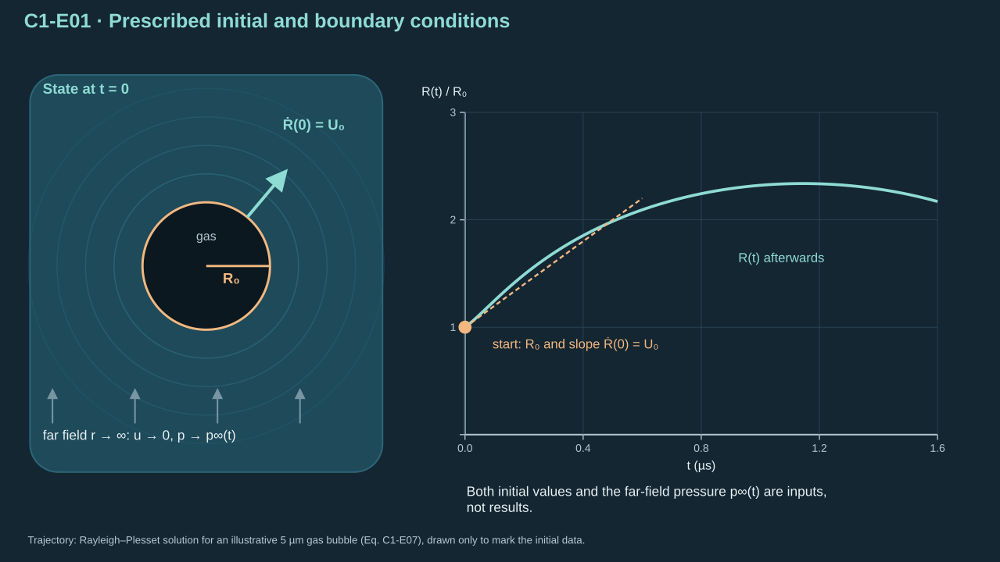
The evolving spherical boundary and the prescribed far-field state.
运动球形边界与给定的远场状态。
Check and interpretation. Positive initial pressure excess over capillarity gives outward acceleration. Initial zero speed therefore does not imply equilibrium. The acceleration expression has units Pa/(kg m⁻²) = m s⁻².
检验与解释。 初始内外压差超过毛细压差时产生向外加速度。因此初速为零不代表平衡。加速度表达式单位为 Pa/(kg m⁻²) = m s⁻²。
1.3 Rayleigh–Plesset derivation
1.3 Rayleigh–Plesset 方程推导
Step 1.3.1 — Obtain the liquid velocity from cavity motion
步骤 1.3.1——由空腔运动求载液速度
Purpose in this chapter. Use the spherical conditions in Eq. (C1.2-E01). Volume conservation converts wall motion into the exterior velocity field needed for momentum and energy calculations.
Conserve carrier volume. Radial incompressibility makes volume flux independent of radius. Integrate its radial derivative. Apply equal normal liquid and interface velocities at the wall. Vapor density does not enter this carrier-flow calculation.
Derivation. Apply mass conservation to a spherical shell. Constant density reduces it to zero divergence. Integrate in radius at fixed time. The integration function can depend on time. A material cavity wall supplies the final boundary value. Appreciable phase transfer changes that boundary value.
C(t) is the radius-independent flux factor (m³ s⁻¹), not a material constant
C(t) 为与径向位置无关的流量因子（m³ s⁻¹），并非材料常数
ρ — positive constant liquid density (kg m⁻³)
ρ — 正常数液体密度（kg m⁻³）
δr — positive fixed shell thickness (m)
δr — 固定球壳正厚度（m）
π — circle constant (1)
π — 圆周率（1）
∂r — radial derivative at fixed time (m⁻¹)
∂r — 固定时间的径向导数（m⁻¹）
Conventions and conditions.∂/∂r differentiates at fixed time; The implication arrows indicate integration and use of the interface condition; The fixed shell stays liquid; r≥R(t)>0.
Inverse-square velocity decay places the inertia in the surrounding carrier.
速度按距离平方反比衰减，惯性来自周围载液。
Check and interpretation. The flux factor divided by radius squared has velocity units. Setting wall speed to zero gives a stationary liquid everywhere.
检验与解释。 通量因子除以半径平方具有速度单位。壁面速度为零时，全部液体静止。
Step 1.3.2 — Prepare the velocity field for momentum integration
步骤 1.3.2——为动量积分建立速度势
Purpose in this chapter. Integrate the velocity from Eq. (C1.3-E02) and fix its reference. The resulting potential lets the radial momentum equation become a pressure relation.
Fix the potential reference. Integrate velocity from infinity to the observation point. The potential applies outside the cavity. Zero potential at infinity fixes the time-dependent integration constant.
Derivation. Purely radial, angle-independent flow has zero curl outside the cavity. The exterior of a sphere is simply connected, so a single-valued potential exists. Integrating velocity introduces an arbitrary time function. Fix that gauge at infinity. The potential packages the velocity field for the momentum integration; it supplies no extra physical degree of freedom.
Conventions and conditions. the integral is an improper integral convergent for r≥R>0; ∂/∂r is the fixed-time spatial derivative.
约定与条件。 该广义积分在 r≥R>0 时收敛；∂/∂r 为固定时间的空间导数。
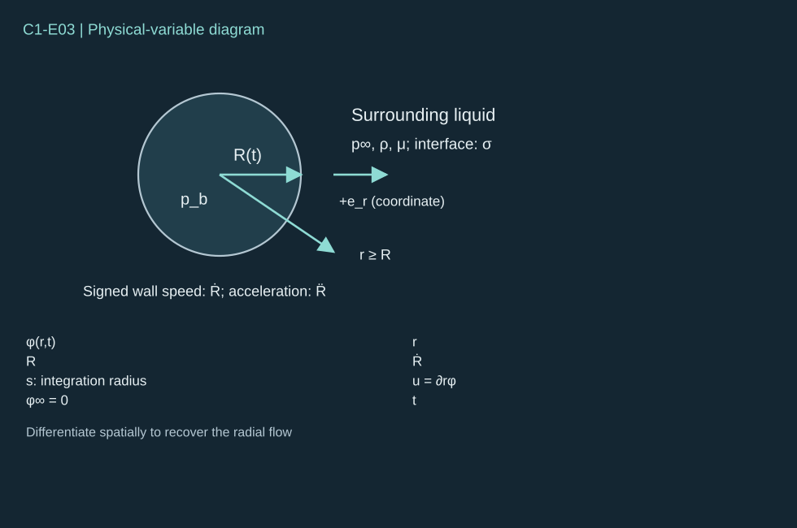
The potential reference is fixed at infinity before differentiation.
在求导之前，先固定无穷远处的速度势参考值。
Check and interpretation. Spatial differentiation recovers positive outward velocity during expansion. Potential has units length × speed. The construction excludes rotational flow and unresolved vortex sheets.
Step 1.3.3 — Separate fixed-position and moving-wall time changes
步骤 1.3.3——区分固定位置与运动壁面的时间变化
Purpose in this chapter. Differentiate the potential from Eq. (C1.3-E03). Bernoulli requires the fixed-position derivative, so this distinction prevents an incorrect wall-inertia term.
Differentiate at fixed position. Hold the denominator fixed while differentiating the potential numerator. Then evaluate the result at the moving wall. Differentiating the wall value instead includes a convective contribution.
Derivation. Differentiate the product in the numerator before evaluating at the wall. For a moving wall value, add the chain-rule displacement term. These operations differ because the observation points differ.
Conventions and conditions. vertical bars specify where the derivative is taken or evaluated; d/dt follows the moving wall value; Each derivative has units m² s⁻².
约定与条件。 竖线表示求导或取值条件；d/dt 跟随运动壁面的取值；各导数的单位均为 m² s⁻²。
A fixed liquid observation point and a moving interface point have different time derivatives.
固定液体观察点与运动界面点对应不同的时间导数。
Check and interpretation. The moving derivative exceeds the Eulerian wall evaluation by wall speed squared. Both derivatives have energy-per-mass units.
检验与解释。 运动导数比欧拉导数的壁面取值大一个壁面速度平方。两者均具有单位质量能量的单位。
Step 1.3.4 — Connect liquid inertia to wall pressure
步骤 1.3.4——将液体惯性与壁面压力联系起来
Purpose in this chapter. Insert Eqs. (C1.3-E02)–(C1.3-E04) into the integrated momentum law. This expresses liquid-side wall pressure through radius, speed, and acceleration.
Integrate radial momentum. The exterior field is irrotational with zero vector Laplacian. Bulk viscous force therefore vanishes. Viscous wall stress and dissipation remain. Reference unsteady Bernoulli to infinity. Insert the fixed-position derivative and wall velocity. Subtracting one half from two gives the inertial coefficient.
Derivation. Start from exterior Euler momentum. In this radial field the bulk viscous term vanishes, so this momentum form also applies outside the viscoustraction boundary. Irrotationality turns convection into a kinetic-energy gradient. Integrate the resulting zero gradient over the connected liquid domain. The spatial integration function depends on time. The gauge and far-field condition determine it. Then evaluate at the wall.
ui — Cartesian velocity component indexed by i (m s⁻¹)
ui — 指标 i 对应的笛卡尔速度分量（m s⁻¹）
uj — Cartesian velocity component indexed by j (m s⁻¹)
uj — 指标 j 对应的笛卡尔速度分量（m s⁻¹）
i — Cartesian component index, 1, 2 or 3 (1)
i — 笛卡尔分量指标，取 1、2 或 3（1）
j — Cartesian component index, 1, 2 or 3 (1)
j — 笛卡尔分量指标，取 1、2 或 3（1）
∂i — coordinate derivative indexed by i (m⁻¹)
∂i — 指标 i 对应的坐标导数（m⁻¹）
∂j — coordinate derivative indexed by j (m⁻¹)
∂j — 指标 j 对应的坐标导数（m⁻¹）
∑ — summation over the indicated index (1)
∑ — 对指定指标求和（1）
B0(t) — Bernoulli integration function (m² s⁻²)
B0(t) — 伯努利积分函数（m² s⁻²）
p — local liquid pressure (Pa)
p — 局部液体压力（Pa）
Conventions and conditions.∂t is taken at fixed position before wall evaluation; Zero vorticity gives ∂jui=∂iuj; smooth fields permit derivative exchange; ∣∣ denotes Euclidean magnitude; ∞ denotes the far-field limit.
Liquid inertia relates the interface pressure to wall acceleration and squared speed.
液体惯性把界面压力与壁面加速度及速度平方联系起来。
Check and interpretation. The coefficient is 2 − 1/2 = 3/2. Constant potential gauge has been fixed; an arbitrary time gauge would change the integration function together with the potential derivative.
Step 1.3.5 — Transfer bubble pressure across the interface
步骤 1.3.5——将气泡压力传递至液体界面
Purpose in this chapter. Apply normal-stress balance at the spherical wall. Surface tension and viscosity connect bubble pressure to the liquid pressure required by Eq. (C1.3-E05).
Balance normal stress. Expansion gives a negative radial strain rate at the wall. The capillary jump lowers liquid pressure relative to cavity pressure. Balance normal traction with Newtonian viscous stress included.
Derivation. Use a normal pointing from liquid into gas. At an inner spherical cavity this normal points inward and curvature is negative. The normal stress jump gives the liquid pressure. Differentiate the radial speed to evaluate the normal viscoustraction.
∂ru — Radial strain rate, evaluated at the wall (s⁻¹)
∂ru — 在壁面取值的径向应变率（s⁻¹）
n — unit normal directed from liquid into gas (1)
n — 液体指向气体的单位法向（1）
er — outward radial unit vector (1)
er — 向外径向单位矢量（1）
κ — signed interface curvature (m⁻¹)
κ — 带符号界面曲率（m⁻¹）
∇s⋅ — surface divergence operator (m⁻¹)
∇s⋅ — 表面散度算子（m⁻¹）
∇⋅ — volume divergence operator (m⁻¹)
∇⋅ — 体散度算子（m⁻¹）
Conventions and conditions. wall evaluation is performed at r=R; Extend the unit normal radially without radial variation; its normal derivative vanishes, so surface and volume divergences agree at the sphere.
Capillary and viscous stresses act at the interface even when the radial bulk viscous force is zero.
即使径向体内黏性力为零，毛细与黏性应力仍作用于界面。
Check and interpretation. For a static sphere the gas pressure exceeds liquid pressure by 2σ/R. The viscous pressure reverses with velocity. This local traction calculation remains necessary after deleting the separate tensor-dissipation check.
Step 1.3.6 — Assemble the radial equation of motion
步骤 1.3.6——组合得到径向运动方程
Purpose in this chapter. Combine Eqs. (C1.3-E05) and (C1.3-E06). The resulting Rayleigh–Plesset equation converts a prescribed pressure history into spherical cavity motion.
Combine inertia and traction. Insert Eq. (C1.3-E06) into Eq. (C1.3-E05). Multiply by carrier density to obtain radial momentum balance. Internal pressure still requires a source model. Use aqueous carrier density for the exterior inertia. PFC density describes a different material domain.
Derivation. Multiply the inertial-pressure relation by density. Replace liquid wall pressure with the traction balance. Collect all pressures with their signs. Divide by positive density and radius when acceleration is required.
Conventions and conditions. Every term is a pressure.
约定与条件。 各项均具有压力单位。
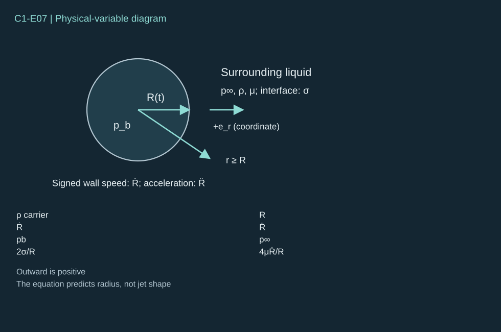
The spherical pressure–inertia balance has a scalar radial state.
球形压力—惯性平衡只具有标量径向状态。
Check and interpretation. The inviscid limit removes the viscous term continuously. At rest capillarity requires positive bubble overpressure. Each original balance term has units Pa.
检验与解释。 无黏极限连续消去黏性项。静止时毛细作用要求气泡内过压为正。原平衡各项单位均为 Pa。
Every term has pressure units: density × length × acceleration, tension/radius, and viscosity × speed/radius. At rest, internal overpressure equals the capillary jump. During collapse, the viscous term resists inward motion. To obtain acceleration, also subtract the squared-speed term. This matches the classical spherical model. [R1][Brennen, Ch. 2]
Step 1.3.7 — Identify the pressure input still needing closure
步骤 1.3.7——明确仍需闭合的压力输入
Purpose in this chapter. Separate vapor and permanent-gas contributions to the pressure in Eq. (C1.3-E07). Chapter 2 must supply their thermal, phase, and inventory evolution.
Derivation. This is an adopted ideal-mixture closure. For components sharing temperature and volume, each ideal-gas partial pressure is proportional to its amount. Add component amounts to obtain total pressure. These algebraic steps do not determine evaporation, temperature, or saturation. Real mixtures can require a different equation of state.
i — component index: PFC vapor, water vapor or permanent gas (1)
i — 组分指标：PFC 蒸气、水蒸气或非凝结气体（1）
pi — component partial pressure (Pa)
pi — 组分分压（Pa）
ni — component amount of substance (mol)
ni — 组分物质的量（mol）
Vb — positive bubble volume (m³)
Vb — 气泡正体积（m³）
R — universal gas constant (J mol⁻¹ K⁻¹)
R — 通用气体常数（J mol⁻¹ K⁻¹）
Tb — positive common gas temperature (K)
Tb — 共同气体正温度（K）
Conventions and conditions. Subscript v labels vapor, PFC its chemical family; Additivity assumes a gas-mixture pressure description with the stated partial pressures; w water; gnoncondensable gas.
约定与条件。 下标 v 表示蒸气，PFC 表示该化学物质族；相加关系采用具有上述分压定义的气体混合物压力描述；w 表示水；g 表示非凝结气体。
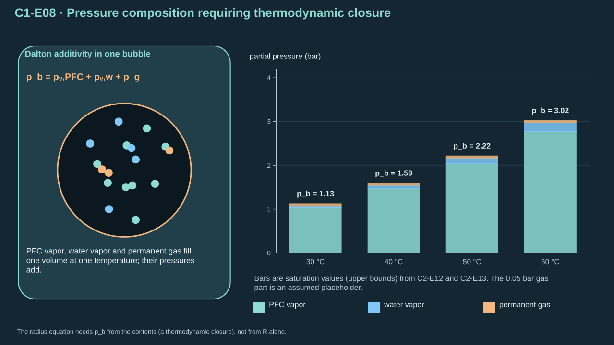
The mechanical input comes from the evolving contents, not from radius alone.
力学输入来自不断变化的气泡内容物，不能仅由半径决定。
Check and interpretation. Pressure × volume has energy units. A vanishing component amount removes its partial pressure. Missing: component mass-transfer rates, energy balance and appropriate phase equilibrium or kinetics.
A fixed-mass polytropic gas control requires its stated thermal assumptions. Evaporation and condensation exchange mass and latent heat. A permanent-gas closure omits those exchanges. Uniform internal pressure requires communication faster than state evolution. Chapter 2 supplies a finite-inventory closure. [R5]
Step 1.4.1 — Measure the inertia carried by the exterior liquid
步骤 1.4.1——计算外部载液携带的动能
Purpose in this chapter. Integrate the velocity field from Eq. (C1.3-E02). Exterior kinetic energy provides the energy measure for checking the radial pressure-driven motion.
本章作用。 积分式（C1.3-E02）的速度场。外域动能提供能量尺度，用于检验压力驱动的径向运动。
Integrate exterior kinetic energy. Square the velocity in Eq. (C1.3-E02). Multiply by the spherical volume element and integrate. The inverse-square integral converges over the infinite exterior. Carrier liquid beyond the wall supplies the moving inertia.
Derivation. At a fixed instant, integrate energy over the whole exterior. Angular integration supplies the shell area. The lower bound is the current interface. Replace speed by the continuity solution, cancel radial powers and evaluate the improper integral before differentiating the result.
Purpose in this chapter. Differentiate Eq. (C1.4-E09), the surface energy, and cavity volume. Their rates allow the momentum equation to be checked as a power balance.
Differentiate stored energy. Apply the product rule to radius and squared speed. Differentiate cavity volume and interface energy separately. The surface-energy derivative assumes constant surface tension.
Derivation. The integrated kinetic energy already contains the moving lower boundary through radius. Apply the product rule to that expression. Differentiating a fixed-limit integral while ignoring the moving boundary would miss part of this rate.
Conventions and conditions. Energy derivatives are powers (W).
约定与条件。 能量的时间导数为功率（W）。
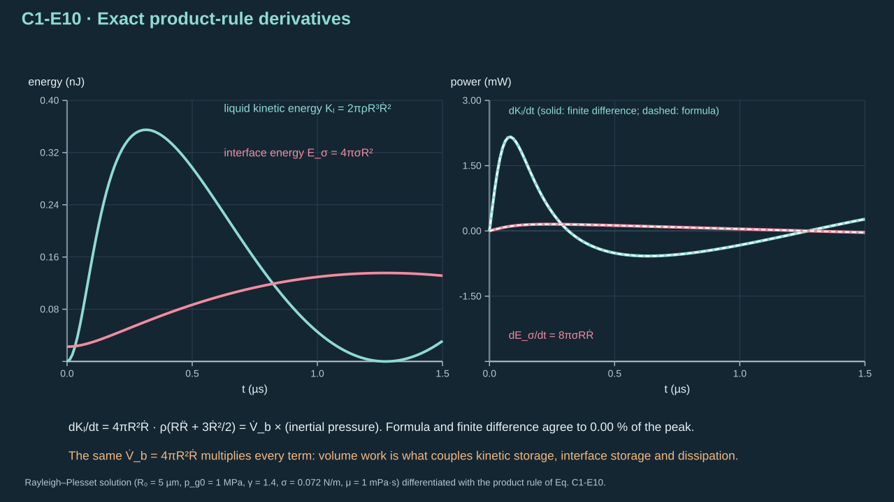
Volume work couples kinetic storage, interface storage and dissipation.
体积功耦合动能储存、界面能储存与耗散。
Check and interpretation. Energy rates have units watts. At a turning point both rates vanish instantaneously, even when acceleration is nonzero. Variable surface tension would add another product-rule term.
Purpose in this chapter. Combine the motion law in Eq. (C1.3-E07) with Eq. (C1.4-E10). This separates kinetic-energy storage, surface-energy storage, and viscous loss.
Convert momentum balance into power balance. Multiply by cavity volume rate. The inertial term becomes Eq. (C1.4-E10), first row. The capillary term equals minus the surface-energy derivative. Squared speed makes viscous power nonpositive in both motion directions.
Derivation. Multiply the radial pressure balance by signed cavity volume rate. Identify the inertial term using the preceding product rule. Expand the capillary and viscous products separately. Move surface-energy storage to the left. This derives mechanical power accounting without restoring the deleted strain-tensor calculation.
Conventions and conditions. The nonnegative term is dissipated power (W).
约定与条件。 非负项是耗散功率（W）。
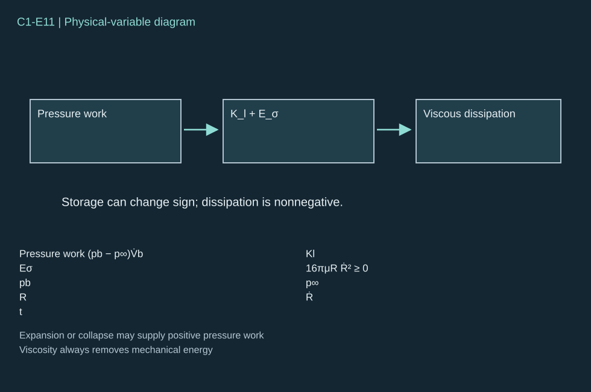
The pressure source supplies mechanical work; focusing cannot create extra energy.
压力源提供机械功；聚焦不能产生额外能量。
Check and interpretation. Expansion against excess internal pressure and collapse under excess external pressure both allow positive work. Dissipation is nonnegative for either velocity sign. Missing: laser absorption, internal energy, latent heat and acoustic radiation in a complete energy budget.
Confinement can redirect liquid and change its energy budget. It may store elastic energy or increase dissipation. Predicting carrier motion requires the thermodynamic source and mechanical receiver. Incident pulse energy alone leaves that budget unresolved.
Step 1.5.1 — Define a solvable ideal-collapse benchmark
步骤 1.5.1——规定可解的理想塌缩基准
Purpose in this chapter. Reduce Eq. (C1.3-E07) to collapse under a constant positive pressure difference. This restricted control problem supplies the trajectory and time benchmark below.
Specify the ideal collapse problem. Start at maximum radius with zero wall speed. Far-field and vapor pressures are constant with positive collapse difference. Omit tension, viscosity, permanent gas and liquid compressibility. Thermal and phase dynamics are excluded assumptions. Their smallness for PFC remains unestablished. A hot vapor-rich cavity can still expand.
Derivation. Define an ideal control: constant vapor pressure, constant exterior pressure, zero gas, zero viscosity and zero surface tension. These assumptions reduce the previously derived momentum law. Start at maximum radius with zero speed. Evaluate acceleration there to select the inward trajectory.
Rmax>0 — Radius at the start of ideal collapse (m)
Rmax>0 — 理想塌缩开始时的半径（m）
R˙ — Wall radial velocity (m s⁻¹)
R˙ — 壁面径向速度（m s⁻¹）
R¨ — Wall radial acceleration (m s⁻²)
R¨ — 壁面径向加速度（m s⁻²）
ρ>0 is carrier density (kg m⁻³)
ρ>0 为载液密度（kg m⁻³）
μ — viscosity, set to zero in this control (Pa s)
μ — 黏度，在此对照中置零（Pa s）
σ — surface tension, set to zero in this control (N m⁻¹)
σ — 表面张力，在此对照中置零（N m⁻¹）
pb — bubble pressure (Pa)
pb — 气泡压力（Pa）
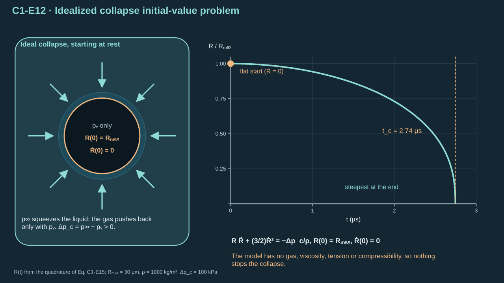
The ideal control begins at rest and excludes the mechanisms that arrest real collapse.
理想对照从静止开始，并排除了阻止实际塌缩的机制。
Check and interpretation. Pressure deficit produces inward acceleration. This hypothetical control omits physical collapse arrest and evolving PFC vapor production.
Step 1.5.2 — Replace time by radius on the collapse branch
步骤 1.5.2——在塌缩分支以半径替代时间
Purpose in this chapter. Transform Eq. (C1.5-E12) into a first-order equation for squared speed. Its integrating factor prepares a trajectory satisfying the maximum-radius initial condition.
Use radius on the collapse branch. Negative initial acceleration starts decreasing radius. Define squared speed as a radius function. Away from the turning point, apply the chain rule. Cancel the nonzero speed there. Extend the relation continuously to the initial endpoint. Multiply by radius cubed to form an exact derivative.
Derivation. On the open inward branch speed is nonzero, so divide the chain rule by speed. Divide the reduced momentum equation by positive radius. Solve the integrating-factor equation explicitly. The initial turning point is handled by continuity rather than division by zero.
ln — natural logarithm with positive dimensionless argument (1)
ln — 自变量为正无量纲数的自然对数（1）
exp — exponential with dimensionless argument (1)
exp — 自变量无量纲的指数函数（1）
Conventions and conditions.d/dR and d/dt are ordinary derivatives on the monotonic branch; Radius powers are the integrating factor, not derivatives.
约定与条件。d/dR 与 d/dt 为单调分支上的普通导数；半径幂构成积分因子，并非导数。
The monotonic collapse branch allows radius to replace time in the first integration.
单调塌缩分支允许在第一次积分中以半径取代时间。
Check and interpretation. Multiplying by the constant maximum-radius cube gives the equivalent integrating factor used below. Every momentum term retains acceleration-per-length-compatible units before integration.
检验与解释。 乘以常数最大半径三次方，即得到下文使用的等价积分因子。积分前各动量项保持一致量纲。
Step 1.5.3 — Recover inward speed and its integration constant
步骤 1.5.3——求向内速度及积分常数
Purpose in this chapter. Integrate Eq. (C1.5-E13) from the stationary maximum-radius state. Select the inward branch before using its reciprocal to calculate collapse time.
Derivation. Integrate the exact radial derivative from the initial maximum to the present radius. Apply zero initial squared speed. Evaluate the cubic antiderivative. Divide by positive radius cubed. Taking a square root gives two mathematical signs; inward motion selects the negative one.
Conventions and conditions. The square root denotes the nonnegative root; its prefixed minus sign selects collapse.
约定与条件。 根号表示非负平方根；前置负号选择塌缩分支。
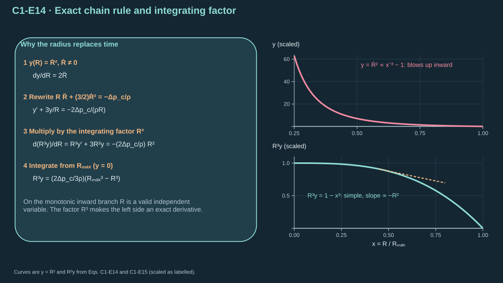
The initial condition fixes the integration constant and the inward sign fixes the branch.
初值确定积分常数，向内的符号确定解分支。
Check and interpretation. At maximum radius the speed is zero. For smaller positive radius the squared speed is positive. The speed scale is the square root of pressure divided by density.
Step 1.5.4 — Separate collapse time from geometric scale
步骤 1.5.4——分离塌缩时间与几何尺度
Purpose in this chapter. Integrate the reciprocal speed from Eq. (C1.5-E14). Nondimensionalizing radius isolates the universal integral from radius, density, and pressure scales.
Separate scale from trajectory. Integrate reciprocal inward speed from maximum radius to zero. Normalize radius by its maximum. Every case in this ideal family shares the resulting dimensionless integral. That common integral establishes the time proportionality.
Derivation. For the inward branch, time increases while radius decreases. The negative reciprocal speed reverses the integration bounds. Normalize radius and include its differential. Factor the cubic ratio before taking the positive square root.
Conventions and conditions. definite integrals follow the collapse branch.
约定与条件。 定积分沿塌缩分支进行。
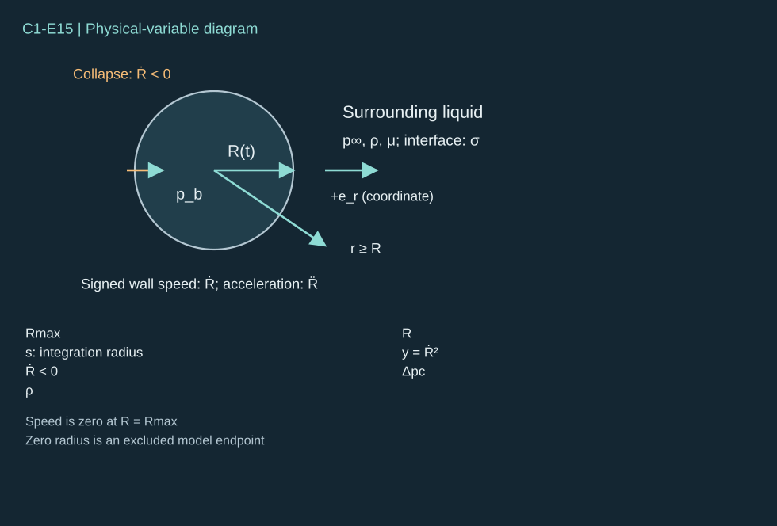
The endpoint singularity is integrable, so the model has a finite collapse time.
端点奇异性可积，因此该模型具有有限塌缩时间。
Check and interpretation. The scale Rmax × sqrt(density/pressure) has units seconds. The integral is improper at its endpoints; its finite value is the formal zero-radius model time.
Step 1.5.5 — Evaluate the Rayleigh time coefficient
步骤 1.5.5——计算瑞利塌缩时间系数
Purpose in this chapter. Evaluate the dimensionless integral in Eq. (C1.5-E15). This establishes the coefficient used in the worked collapse-time calculation.
本章作用。 计算式（C1.5-E15）的无量纲积分。由此确定塌缩时间算例所用的系数。
Evaluate the coefficient. Substitute the cube of normalized radius, including its Jacobian. The exponents combine as one half minus two thirds. The result is minus one sixth. Both beta-function arguments are positive, so the integral converges. The coefficient agrees with the published Rayleigh factor. [R1][R3]
Derivation. Cube the normalized radius. Carry both the numerator exponent and Jacobian into the transformed integral. Match each exponent to the beta-function definition. Inspect both endpoints before evaluating the coefficient.
Conventions and conditions. The numeral 6 inside the root is a dimensionless constant; the ellipsis indicates decimal continuation; x,q∈[0,1] and q=x3 define the substitution domain..
The change of variables exposes the beta integral that fixes the numerical coefficient.
换元揭示贝塔积分，从而确定数值系数。
Check and interpretation. Both endpoint powers exceed −1, ensuring integrability. This dimensionless coefficient follows from the trajectory integral. It is independent of material fitting.
检验与解释。 两个端点幂指数均大于 −1，因而可积。此无量纲系数来自轨迹积分，不依赖材料拟合。
Step 1.5.6 — Cross-check the ideal trajectory with pressure work
步骤 1.5.6——用压力功交叉检验理想轨迹
Purpose in this chapter. Insert Eq. (C1.5-E14) into the kinetic energy from Eq. (C1.4-E09). Agreement with pressure work checks the collapse branch and integration constant.
Check pressure work. Insert Eq. (C1.5-E14) into the kinetic-energy integral. The result equals work from the lost cavity volume. Energy vanishes at maximum radius and becomes positive during collapse. This checks the integration constant and sign.
Derivation. Insert squared speed into the exterior kinetic-energy result. Cancel density, distribute radius cubed and remove its denominator. Independently integrate pressure work over decreasing cavity volume. Differentiate the result to check its power and sign.
Δpc is constant positive pressure difference (Pa)
Δpc 为常数正压差（Pa）
Vmax is maximum cavity volume (m³)
Vmax 为最大空腔体积（m³）
π is the circle constant (dimensionless)
π 为圆周率（无量纲）
Kl/EB is dimensionless and this control has zero viscous and capillary losses
Kl/EB 无量纲，此对照模型的黏性与毛细损失为零
Vb — cavity volume, 4πR3/3 (m³)
Vb — 空腔体积，4πR3/3（m³）
V — dummy volume variable (m³)
V — 积分哑体积变量（m³）
t — time (s)
t — 时间（s）
R˙ — wall speed (m s⁻¹)
R˙ — 壁面速度（m s⁻¹）
The Rayleigh speed solution and pressure-work balance agree exactly.
瑞利速度解与压力功平衡严格一致。
Check and interpretation. Pressure times displaced volume has joule units. Zero initial energy and positive growth during collapse agree with the mechanical power balance. Radial liquid energy does not specify jet energy.
Prescribe maximum radius 30 μm, density 1000 kg m⁻³, and collapse pressure 100 kPa. These teaching inputs are not measured PFC properties. Substitute SI values before converting units. At half radius, the cubic ratio is eight. Subtracting one leaves seven.
规定最大半径 30 μm、密度 1000 kg m⁻³、塌缩压差 100 kPa。这些教学输入并非 PFC 实测物性。先代入 SI 数值，再换算单位。一半半径处的三次方比值为八，减去一得到七。
Step 1.5.7 — Put the ideal benchmark on a numerical scale
步骤 1.5.7——给出理想基准的数值尺度
Purpose in this chapter. Apply Eqs. (C1.5-E14)–(C1.5-E17) to the declared teaching inputs. This translates the benchmark into time, energy, and speed before testing its validity.
Derivation. Convert every teaching input to SI units. Compute the common pressure–density factor and cubic radius before inserting them into time, energy and speed formulas. The half-radius energy fraction follows from the cube of one half.
推导。 将全部教学输入换为 SI 单位。先计算共同压差密度因子及半径三次方，再代入时间、能量和速度公式。半径减半时的能量比例来自二分之一的三次方。
Conventions and conditions. s, J, μs and nJ mean seconds, joules, microseconds and nanojoules; the vertical bar specifies half-radius evaluation.
约定与条件。 s、J、μs 与 nJ 分别为秒、焦耳、微秒与纳焦耳；竖线表示在一半半径处取值。
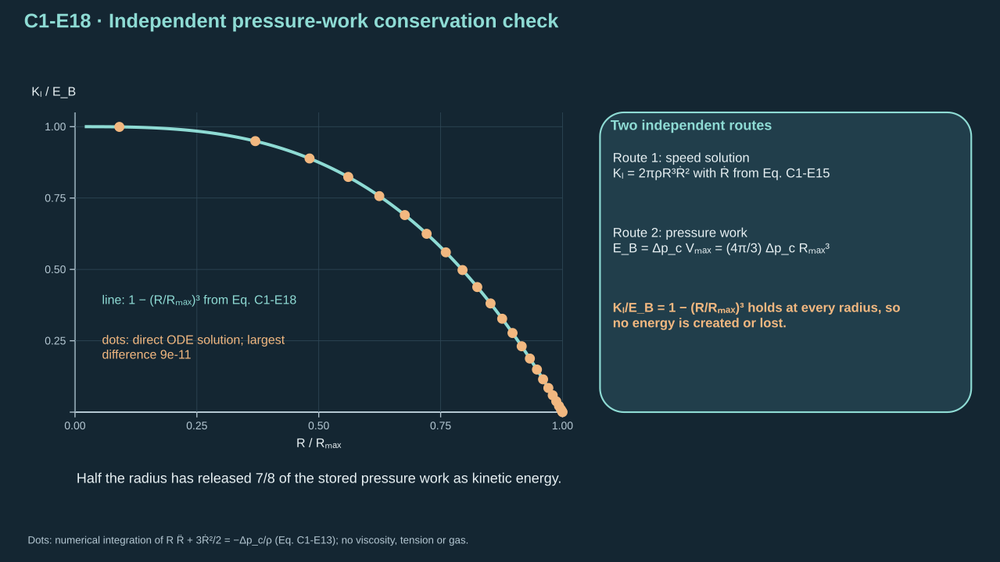
The original numerical control is preserved with its energy and branch checks.
保留原始数值对照，并补充能量与解分支检验。
Check and interpretation. One microsecond is 10⁻⁶ seconds; one nanojoule is 10⁻⁹ joules. The final values below agree with independent quadrature and pressure-work checks. These inputs are illustrative.
Length × √(density/pressure) has units of seconds. Doubling radius doubles collapse time and increases work eightfold. Quadrupling pressure halves time and doubles speed at fixed radius fraction. The dimensionless initial-value problem, and hence its coefficient, stays unchanged. Gas cushioning, varying vapor pressure or confinement can change that problem.
The zero-radius limit gives finite energy and divergent wall speed. Physical maximum speed: Not established. Missing: compressibility, internal pressure, heat and mass transfer, molecular scales and interface distortion. The next equation locates a chosen Mach threshold on the ideal trajectory. It supplies a diagnostic, not a collapse-arrest law.
Step 1.5.8 — Locate where the ideal speed needs further physics
步骤 1.5.8——定位理想速度需要补充物理的位置
Purpose in this chapter. Compare the ideal wall speed with a chosen Mach threshold. This diagnoses the incompressible trajectory without establishing a physical maximum speed.
本章作用。 将理想壁面速度与选定的马赫数阈值比较。这用于诊断不可压缩轨迹，不确立实际最大速度。
Derivation. Use the ideal inward speed as a diagnostic trajectory. Square the nonnegative Mach magnitude, set a selected positive threshold, and solve for the positive radius fraction. The threshold marks a chosen modeling cutoff. It does not predict the physical collapse endpoint.
M∗>0 is a selected diagnostic Mach value (dimensionless)
M∗>0 为选择的诊断马赫值（无量纲）
xM=RM/Rmax is the radius fraction when Mw=M∗ (dimensionless)
xM=RM/Rmax 为 Mw=M∗ 时的半径比例（无量纲）
RM — Cavity radius at the selected Mach value (m)
RM — 选定马赫数处的空腔半径（m）
Rmax — Radius at the start of ideal collapse (m)
Rmax — 理想塌缩开始时的半径（m）
ρ is carrier density (kg m⁻³)
ρ 为载液密度（kg m⁻³）
Δpc is positive collapse pressure (Pa)
Δpc 为正塌缩压差（Pa）
x — normalized radius, R/Rmax (1)
x — 无量纲半径，R/Rmax（1）
R — current cavity radius (m)
R — 当前空腔半径（m）
Conventions and conditions. absolute bars denote magnitude; The number uses the previous teaching density and pressure; Teaching inputs use the preceding density and pressure, with c=1500 m s⁻¹ and chosen M∗=0.1.
约定与条件。 绝对值符号表示大小；数值使用前述教学密度与压差；教学输入采用前述密度和压差，并取 c=1500 m s⁻¹、选定 M∗=0.1。
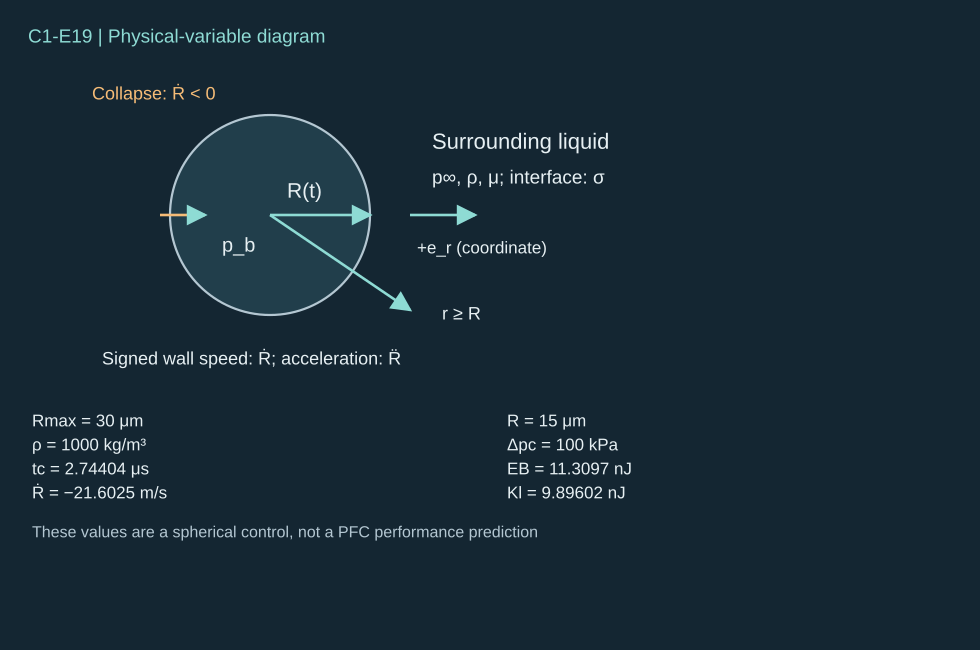
A Mach diagnostic exposes the shrinking validity range of incompressible collapse.
马赫数诊断揭示不可压缩塌缩模型的适用范围不断缩小。
Check and interpretation. The bracket is dimensionless and exceeds one, so the diagnostic radius lies below maximum radius. As threshold tends to zero, its radius approaches the starting radius. Singular zero radius remains outside physical validity.
Step 1.6.1 — Summarize a pressure history as pressure impulse
步骤 1.6.1——用压力冲量概括压力历程
Purpose in this chapter. Move from spherical radius dynamics to spatial liquid response. Define a local time-integrated pressure field whose gradient enters the next momentum calculation.
本章作用。 从球形半径动力学转向空间液体响应。定义局部压力时间积分场，其梯度将进入下一步动量计算。
Define pressure impulse. Integrate local pressure relative to a spatially uniform reference over time. Pressure impulse has units Pa s. Its spatial gradient drives liquid velocity change. Acoustic crossing time has units s. The cited short-event model motivates the following integration and approximation. [R2]
定义压力冲量。 对局部压力相对于空间均匀参考值作时间积分。压力冲量单位为 Pa s，其空间梯度驱动液体速度变化。声传播时间单位为 s。所引短事件模型提供以下积分与近似的依据。 [R2]
Derivation. Place a pressure observer at a fixed liquid point throughout the event. Integrate over time there. Subtract a spatially uniform reference pressure. A separate area integral converts pressure impulse into mechanical impulse when the surface is fixed. For moving surfaces, pressure, normal and area must remain inside the time integral.
Jp — gauge-pressure mechanical impulse on the liquid control volume (N s)
Jp — 作用于液体控制体的表压机械冲量（N s）
S(t) — liquid control-volume surface (m²)
S(t) — 液体控制体表面（m²）
n — outward unit normal to the control surface (1)
n — 控制表面向外单位法向（1）
dA — area element (m²)
dA — 面积元（m²）
Conventions and conditions. Square brackets on Π denote units, not endpoint evaluation; The integral is at fixed position in a liquid domain whose displacement will be assessed below; Brackets denote units; fixed-surface reduction requires fixed orientation and all sampled points remaining liquid.
Impulse combines duration and amplitude at each liquid position.
压力冲量在每个液体位置组合压力幅值与持续时间。
Check and interpretation. A constant reference shifts the local pressure integral without changing its spatial gradient. Absolute contact loads require the actual exterior pressure and viscoustraction. A point crossed by an interface needs a moving-domain formulation.
Step 1.6.2 — Convert pressure history into liquid velocity change
步骤 1.6.2——将压力历程转为液体速度变化
Purpose in this chapter. Use the pressure impulse defined in Eq. (C1.6-E20). Integrating momentum separates pressure, convective, and viscous contributions to velocity change. This exact model identity is the starting point for Eq. (C1.6-E22).
Derivation. Divide constant-density Navier–Stokes by density. Integrate every term between the same fixed times at the same fixed position. The fundamental theorem gives the velocity difference. Smoothness and a common liquid domain permit gradient–integral exchange. The spatially uniform reference has zero gradient.
Conventions and conditions. the dot is a true vector contraction in convective acceleration, not an equation separator.
约定与条件。 圆点是对流加速度中的真正矢量缩并，并非公式分隔符。
The short-event approximation must justify removing convective and viscous impulses.
短事件近似必须说明为何可以删除对流与黏性冲量。
Check and interpretation. The convective and viscous terms remain integrals because their fields evolve. Each integrated term has units velocity. Time-dependent bounds that depend on position require additional gradient terms.
Step 1.6.3 — Decide when pressure impulse dominates the event
步骤 1.6.3——判断事件何时由压力冲量主导
Purpose in this chapter. Estimate the convective and viscous terms retained in Eq. (C1.6-E21). Under the stated short-event conditions, the reduced model links incompressibility to a pressure-impulse boundary problem.
Bound the omitted scales. Choose representative liquid speed and variation length. Convective impulse scales as speed × duration/length. Viscous impulse scales as kinematic viscosity × duration/length². Small interface displacement permits fixed boundary geometry. These scale diagnostics provide no guaranteed singular-boundary-layer error bound. Under these conditions, subtract incompressible velocities and take the divergence.
Derivation. Scale the omitted acceleration terms over the pulse duration. Compare them with a velocity increment of order the chosen speed. Apply incompressibility to both endpoint fields. Taking divergence of reduced impulse momentum gives a Laplace problem. Boundary data select its solution.
Conventions and conditions.∇⋅ denotes divergence and ∇2 Laplacian; ≪ means asymptotically small, and ≃ marks the reduced approximation; The last Laplace equation belongs to that reduced model; ∼ denotes a scale estimate, rather than an equality or rigorous error bound.
The velocity depends on a spatial impulse gradient constrained by boundary geometry.
速度取决于受边界几何约束的空间压力冲量梯度。
Check and interpretation. If the actual increment is much smaller than the chosen speed, these ratios need not bound its relative error. A fixed wall gives zero normal impulse derivative when normal velocity is unchanged. Driven and outlet boundaries supply their impulse values.
A fixed impermeable wall requires zero normal velocity change. Its normal impulse derivative therefore vanishes. A driven cavity prescribes impulse or pressure history. A communicating outlet supplies its pressure reference. A spatially uniform impulse addition has zero gradient and changes no velocity. Pulse duration and boundary geometry can change the response at fixed peak pressure.
Step 1.6.4 — Show how a boundary selects the liquid-motion direction
步骤 1.6.4——说明边界如何选择液体运动方向
Purpose in this chapter. Solve the reduced model from Eq. (C1.6-E22) for a straight column. Inlet and outlet impulses select a gradient and therefore an axial velocity increment.
Solve a straight-column benchmark. Start with a stationary uniform column along the positive axis. Area is constant and side walls are fixed. Prescribe positive inlet impulse and zero outlet impulse. Integrate the one-dimensional Laplace equation twice. Apply both endpoint values to obtain its gradient.
Derivation. For the straight column, integrate the zero second derivative once to obtain a constant slope. Integrate again. Apply inlet data to the intercept and outlet data to the slope. The negative pressure-impulse slope accelerates liquid in the positive axial direction.
Conventions and conditions.d/dz is an axial derivative; Subscript z labels the component and 0 the driven endpoint; The uniform-speed column is an inviscid core benchmark; no-slip wall layers are omitted.
约定与条件。d/dz 为轴向导数；下标 z 表示分量，0 表示受驱动端点；匀速液柱是无黏核心流基准；省略无滑移壁面层。
A linear spatial impulse drop accelerates liquid toward the outlet.
线性的空间冲量下降使液体向出口加速。
Check and interpretation. At inlet and outlet the solution reproduces both prescribed values. Impulse divided by density and length has units m s⁻¹. Equal pressure peaks with different durations produce different speed increments.
检验与解释。 解在入口和出口恢复两个给定值。冲量除以密度及长度的单位为 m s⁻¹。相同压力峰值、不同持续时间会产生不同速度增量。
Prescribe 0.60 MPa for 0.50 μs across a 100 μm column. Use the earlier density, viscosity 0.001 Pa s, and sound speed 1500 m s⁻¹. The velocity change is 3.0 m s⁻¹. Crossing time is shorter than the pulse. Uniform pressure and final jet speed remain unestablished. The solved column has an end-to-end pressure gradient.
在 100 μm 液柱两端施加 0.60 MPa 压差，持续 0.50 μs。采用前述密度、黏度 0.001 Pa s 和声速 1500 m s⁻¹。速度变化为 3.0 m s⁻¹。传播时间短于脉冲时长。均匀压力及最终射流速率尚未确立。已解液柱具有端到端压力梯度。
Step 1.6.5 — Check the scale and assumptions of the column result
步骤 1.6.5——检验液柱结果的尺度与假设
Purpose in this chapter. Apply Eq. (C1.6-E23) to a declared pressure pulse. Calculate velocity change and compare acoustic, convective, and viscous scales before interpreting that result.
Derivation. The rectangular pulse is a stipulated ideal benchmark. Convert its pressure, duration and column length. Compute the impulse, velocity, displacement ratio, viscous ratio and crossing time separately. The total pulse duration does not specify its physical rise time.
Δp is constant applied column pressure difference (Pa)
Δp 为施加的常数液柱压差（Pa）
τ is pulse duration (s)
τ 为脉冲持续时间（s）
U is column speed increment (m s⁻¹)
U 为液柱速度增量（m s⁻¹）
ρ=1000 kg m⁻³ is density
ρ=1000 kg m⁻³ 为密度
L=100×10−6 m is length
L=100×10−6 m 为长度
c=1500 m s⁻¹ is sound speed
c=1500 m s⁻¹ 为声速
ta is acoustic crossing time (s)
ta 为声传播时间（s）
ν=μ/ρ=10−6 m² s⁻¹ with μ=0.001 Pa s
ν=μ/ρ=10−6 m² s⁻¹，且 μ=0.001 Pa s
μ — Carrier dynamic viscosity (Pa s)
μ — 载液动力黏度（Pa s）
Conventions and conditions. The three ratios are dimensionless; μs means microseconds.
约定与条件。 三个比值均无量纲；μs 表示微秒。
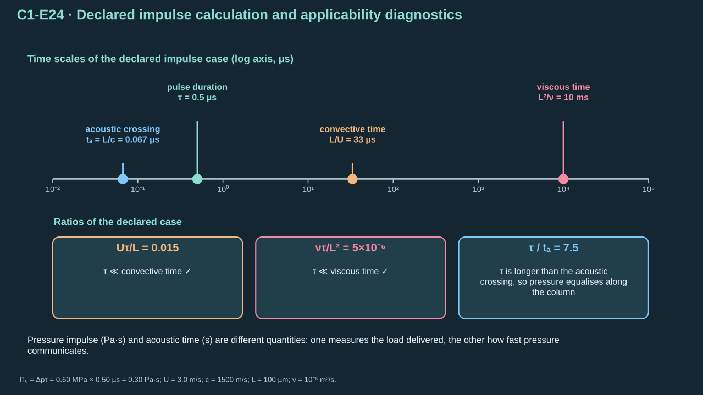
Pressure impulse and acoustic time have distinct definitions, dimensions and roles.
压力冲量与声传播时间具有不同的定义、量纲与作用。
Check and interpretation. The rectangular discontinuity has zero ideal rise time, so its fronts require acoustic treatment. The integrated column result is a reduced impulse benchmark. A real pulse needs a measured or prescribed finite rise time and the separate communication test below.
Directional motion requires asymmetry. A sphere in uniform infinite liquid has no preferred direction. Outlets, menisci, walls, neighbors or uneven heating break that symmetry. Stand-off is center-to-boundary distance divided by maximum radius. Equal stand-off still permits different curvature and material response. Collapse near a rigid plane commonly directs a jet toward it. Deformable boundaries can change or split that response. [R3][R12]
Step 1.6.6 — Explain why a spherical cavity cannot choose a jet direction
步骤 1.6.6——说明球形空腔为何不能选择射流方向
Purpose in this chapter. Contrast spherical symmetry with the directed column in Eq. (C1.6-E23). This identifies the geometric information missing from a radius-only model and motivates Section 1.7.
Derivation.Stand-off compares a center-to-boundary distance with maximum bubble radius. It is a geometric descriptor. To prove directional cancellation for the unbounded sphere, write each radial unit-vector component and integrate over all solid angles. The azimuthal sine and cosine integrate to zero; the axial component cancels between hemispheres.
er is the outward radial unit vector (dimensionless)
er 为向外径向单位矢量（无量纲）
dΩ is the dimensionless solid-angle measure
dΩ 为无量纲立体角测度
0 is the zero vector (dimensionless)
0 为零矢量（无量纲）
θ — polar angle, 0≤θ≤π (1)
θ — 极角，0≤θ≤π（1）
ψ — azimuthal angle, 0≤ψ≤2π (1)
ψ — 方位角，0≤ψ≤2π（1）
Conventions and conditions. The angular identity expresses directional cancellation under perfect spherical symmetry; it is not a boundary-jet prediction; Angles are dimensionless radians; tuple entries are Cartesian vector components.
Stand-off locates a boundary; perfect spherical symmetry selects no outgoing direction.
离壁比定位边界；完全球对称不能选出向外喷射方向。
Check and interpretation. The cancellation concerns perfect symmetry. Actual boundaries change the spatial pressure and velocity problem. Stand-off alone cannot determine the response of different boundary materials or curvatures.
Step 1.7.1 — Replace the radius model with spatial liquid equations
步骤 1.7.1——用空间液体方程替代纯半径模型
Purpose in this chapter. Retain the mass and momentum laws across the actual liquid domain. These equations provide the spatial dynamics needed when boundaries and interface shape determine the jet.
Specify the spatial jet problem. Prescribe initial interface shape and carrier velocity. Define solid boundaries, outlet, contact-line behavior and pressure closure. The following equations conserve mass and momentum for constant-property incompressible Newtonian liquid. Gravity is omitted. Solve them with the interface and boundary conditions below. A fitted radius history leaves these spatial conditions unresolved.
Derivation. Start with local mass and Cauchy momentum conservation. Adopt constant-density Newtonian stress. Its divergence reduces to the vector Laplacian because incompressibility removes the divergence-gradient term. The spatial problem has three velocity components, pressure and unknown interface shape, together with initial and boundary data.
Conventions and conditions.∇⋅,∇,∇2 denote divergence, gradient and vector Laplacian; ∂t is the fixed-position derivative; The dot in convection is vector contraction; The momentum equation has force-per-volume units (N m⁻³); Superscript T denotes transpose; body forces are omitted; the density derivative is displayed before imposing constant density.
约定与条件。∇⋅,∇,∇2 分别为散度、梯度与矢量拉普拉斯；∂t 为固定位置导数；对流中的圆点为矢量缩并；动量方程各项单位为单位体积力（N m⁻³）；上标 T 表示转置；忽略体力；密度导数写在施加常密度条件之前。
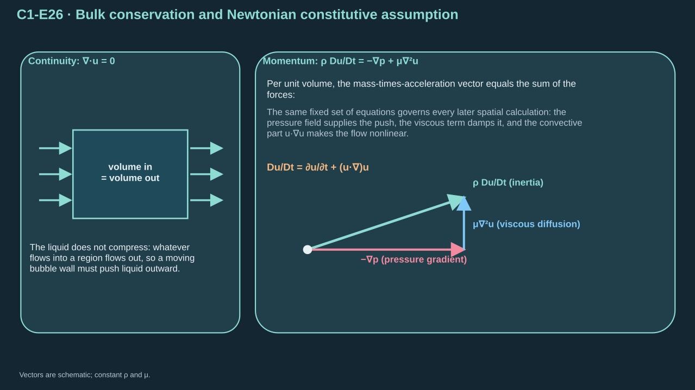
Bulk momentum and volume conservation supply the spatial field needed for jet formation.
体内动量与体积守恒给出射流形成所需的空间场。
Check and interpretation. Stress divergence and inertia both have units N m⁻³. Supply a divergence-free initial velocity, compatible interface shape, wall velocities, outlet data and contact-line law. A radius history cannot replace these fields.
检验与解释。 应力散度和惯性项单位均为 N m⁻³。需要给定无散初始速度、相容初始界面、壁面速度、出口数据及接触线规律。半径历程不能代替这些空间场。
Step 1.7.2 — Close the spatial model at its moving interface
步骤 1.7.2——在运动界面闭合空间模型
Purpose in this chapter. Add interface motion and traction conditions to Eq. (C1.7-E26). Their orientation and stress signs must recover the spherical jump in Eq. (C1.3-E06).
Set interface orientation and stress. The normal points from liquid into gas. An inner spherical cavity therefore has negative curvature. An outer liquid droplet has positive curvature. This reproduces Eq. (C1.3-E06). A clean interface with negligible gas viscosity has zero tangential viscoustraction. At zero liquid viscosity, that condition adds no strain-rate constraint. Without phase transfer, interface and liquid normal velocities match.
Derivation. Represent a material interface by a level set. Its material derivative vanishes, yielding equal normal speeds. The level-set normal points from liquid to gas. Project the clean-interface stress jump onto its normal and tangent. Constant surface tension and negligible gas viscous stress give the pressure and tangential conditions.
n is the unit normal from liquid into gas (dimensionless)
n 为从液体指向气体的单位法向（无量纲）
κ is signed curvature (m⁻¹)
κ 为带符号曲率（m⁻¹）
Vn is interface normal speed (m s⁻¹)
Vn 为界面法向速度（m s⁻¹）
pl — Adjacent-liquid absolute pressure (Pa)
pl — 邻近液体绝对压力（Pa）
pb — Uniform bubble absolute pressure (Pa)
pb — 均匀气泡绝对压力（Pa）
σ is surface tension (N m⁻¹)
σ 为表面张力（N m⁻¹）
μ is viscosity (Pa s)
μ 为黏度（Pa s）
s is any unit tangent (dimensionless)
s 为任意单位切向（无量纲）
R is spherical cavity radius (m)
R 为球形空腔半径（m）
F — smooth dimensionless level set increasing into gas (1)
F — 向气体侧增加的光滑无量纲水平集（1）
x — position (m)
x — 位置（m）
t — time (s)
t — 时间（s）
Tg — gas stress, −pbI (Pa)
Tg — 气体应力，−pbI（Pa）
Tl — liquid stress, −plI+2μD (Pa)
Tl — 液体应力，−plI+2μD（Pa）
I — identity tensor (1)
I — 单位张量（1）
∇ — spatial gradient operator (m⁻¹)
∇ — 空间梯度算子（m⁻¹）
∇s⋅ — surface divergence operator (m⁻¹)
∇s⋅ — 表面散度算子（m⁻¹）
∂t — time derivative at fixed position (s⁻¹)
∂t — 固定位置的时间导数（s⁻¹）
Conventions and conditions.∇u is its spatial gradient, with superscript T denoting transpose; ∇s⋅ is surface divergence; Dots denote tensor/vector contractions; The level-set gradient is nonzero on the interface.
约定与条件。∇u 为其空间梯度，上标 T 表示转置；∇s⋅ 为表面散度；圆点表示张量或矢量缩并；水平集在界面上的梯度非零。
Interface normals, signed curvature and material motion must use one consistent convention.
界面法向、带符号曲率与物质运动必须采用一致约定。
Check and interpretation. The interface condition matches normal velocity; tangential node motion is a parametrization choice. It imposes no solid-wall no-slip condition on an inviscid free surface. Phase transfer needs a mass-flux condition instead.
Set zero liquid velocity at a stationary viscous wall. Couple liquid velocity and stress to a moving film. Supply external pressure and stress at the outlet or meniscus. Close the contact line with a pinned or moving-angle law. Chapter 4 supplies payload and release mechanics. Appreciable phase transfer replaces equal normal velocities with Chapter 2’s mass-flux balance.
Step 1.7.3 — Construct a conditional pre-impact interface solver
步骤 1.7.3——构造有条件的撞击前界面求解模型
Purpose in this chapter. Reduce Eqs. (C1.7-E26) and (C1.7-E27) under the stated inviscid potential-flow assumptions. The resulting system evolves interface shape and can resolve directional pre-impact motion.
Derive the potential-flow reduction. Assume inviscid, initially irrotational flow away from shocks and unresolved wall layers. The potential satisfies Laplace’s equation. Without phase slip, interface nodes follow liquid velocity. Convert the Eulerian Bernoulli derivative to the material derivative. Add velocity dotted with the potential gradient. This closes a spatial pre-impact model under the stated assumptions. Boundary-integralmicrojet models use this reduction. [R4]
Derivation. For inviscid irrotational liquid, choose potential and interface position as unknowns. Incompressibility gives Laplace’s equation. On the interface, combine Bernoulli with the inviscid traction jump. Then convert the fixed-position derivative into the derivative following a liquid marker. This conversion changes the kinetic-term sign.
Conventions and conditions.∇ and ∇2 are spatial gradient and Laplacian; D/Dt is the material derivative; ∣u∣ is speed and the dot a vector contraction; The potential gauge is fixed at infinity; Interface markers X(t) follow liquid particles; Dϕ/Dt has units m² s⁻²; assume single-valued potential and a smooth pre-impact interface.
The interface shape evolves jointly with potential; changing geometry creates focusing.
界面形状与速度势共同演化，几何变化产生聚焦。
Check and interpretation. Solve-and-advance loop: prescribe initial interface and potential; evaluate pressure input and curvature; solve the harmonic field with interface potential and impermeable-wall normal data; recover velocity; advance interface positions and interface potential; repeat. An outlet supplies its pressure or compatible potential condition. Far-field gauge fixes the additive freedom. Material and Eulerian dynamic conditions are alternative forms. Missing: physical PFC pressure history, phase transfer, contact-line law where applicable, and treatment of topology changes.
Check the spherical limit of Eq. (C1.7-E28). Wall potential is minus radius × wall speed. Curvature is minus two/radius. Differentiate the wall potential and rearrange the squared-speed term. This recovers inviscid Rayleigh–Plesset. Interface penetration then changes topology. Post-penetration flow requires a new domain and pressure-transmission model.
Step 1.7.4 — Recover the radial model as a consistency check
步骤 1.7.4——恢复径向模型以检验一致性
Purpose in this chapter. Apply Eq. (C1.7-E28) to a sphere. Recovering the inviscid form of Eq. (C1.3-E07) checks the moving-interface signs and derivative convention.
Derivation. Test the spatial model against a sphere. Evaluate the potential at its moving wall and differentiate by the product rule. Insert negative cavity curvature into the material dynamic condition. Move squared-speed terms to the same side, reverse signs, then multiply by density.
ϕΓ is the velocity potential evaluated on the spherical interface (m² s⁻¹), with subscript Γ the interface label
ϕΓ 为球形界面处速度势（m² s⁻¹），下标 Γ 标识界面
R>0 is radius (m)
R>0 为半径（m）
R˙ — Wall radial velocity (m s⁻¹)
R˙ — 壁面径向速度（m s⁻¹）
R¨ — Wall radial acceleration (m s⁻²)
R¨ — 壁面径向加速度（m s⁻²）
κ is signed liquid-to-gas curvature (m⁻¹)
κ 为液体指向气体约定下的带符号曲率（m⁻¹）
p∞ — Far-field absolute pressure (Pa)
p∞ — 远场绝对压力（Pa）
pb — Uniform bubble absolute pressure (Pa)
pb — 均匀气泡绝对压力（Pa）
σ is surface tension (N m⁻¹)
σ 为表面张力（N m⁻¹）
ρ is carrier density (kg m⁻³)
ρ 为载液密度（kg m⁻³）
Γ — Moving liquid–gas interface (—)
Γ — 运动液—气界面（—）
t — time (s)
t — 时间（s）
Conventions and conditions. The potential is differentiated along the wall; viscosity is zero in this check; d/dt follows the spherical interface.
约定与条件。速度势沿壁面求导；此检验中黏度为零；d/dt 跟随球形界面。
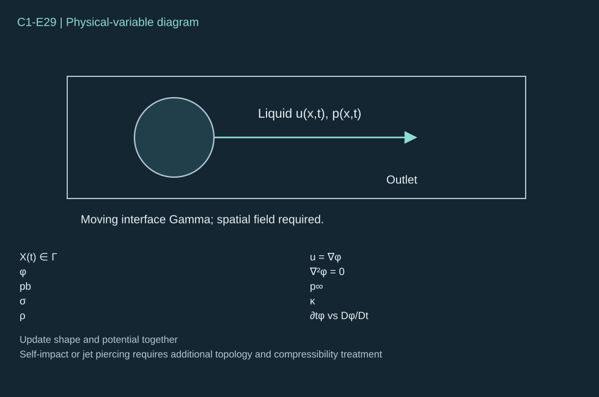
The spatial potential formulation returns the spherical model under spherical geometry.
空间势流表述在球形几何下恢复球形模型。
Check and interpretation. This recovers the inviscid radial balance with the same capillary sign. The viscous term cannot emerge from an inviscid potential boundary condition. At static equilibrium the Laplace overpressure is recovered.
Step 1.7.5 — Check whether incompressibility is adequate for the event
步骤 1.7.5——检验事件是否适用不可压缩近似
Purpose in this chapter. Compare wall speed and event duration with acoustic scales. These separate diagnostics delimit both the pressure-impulse reduction and the incompressible interface model.
Derivation. Derive the communication time from linear acoustics about uniform resting liquid. Linear mass conservation and momentum combine into a wave equation. A disturbance travels the selected path at sound speed. Choose the path from the driven region to the relevant observer. Use the shortest important pressure-rise or change time, rather than automatically using pulse duration. Separately evaluate the wall-speed history.
∂tρ′+ρ0∇⋅u′∂t2ρ′+ρ0∇⋅∂tu′∂t2ρ′−∇2p′Le=ctataτe=10nsτe=1μs=1000ns∣R˙∣=15ms−1=0,ρ0∂tu′=−∇p′,p′=c2ρ′,=0,ρ0∇⋅∂tu′=−∇2p′,=0⇒∂t2p′=c2∇2p′,⇒ta=Le/c,Ce=ta/τe,=1500100×10−6s=66.6667ns,⇒Ce=66.6667/10=6.66667,⇒Ce=66.6667/1000=0.0666667,⇒Mw=15/1500=0.01in both cases.Mw=c∣R˙∣Ce=cτeLe
Symbols for Eq. (C1.7-E30).
式（C1.7-E30）的符号定义。
First individual definition / 第一项单独定义
Second individual definition / 第二项单独定义
Mw is wall Mach number (dimensionless)
Mw 为壁面马赫数（无量纲）
Ce a pressure-communication ratio (both dimensionless)
Ce 为压力通信比（两者均无量纲）
R˙ is wall speed (m s⁻¹)
R˙ 为壁面速度（m s⁻¹）
c>0 is carrier sound speed (m s⁻¹)
c>0 为载液声速（m s⁻¹）
Le>0 is the distance across which loading must communicate (m)
Le>0 为载荷必须传播的距离（m）
τe>0 is the event's relevant rise or change time (s)
τe>0 为事件相关的上升或变化时间（s）
ρ0 — positive uniform background density (kg m⁻³)
ρ0 — 均匀背景正密度（kg m⁻³）
ρ′ — small acoustic density perturbation (kg m⁻³)
ρ′ — 小幅声学密度扰动（kg m⁻³）
p′ — small acoustic pressure perturbation (Pa)
p′ — 小幅声学压力扰动（Pa）
u′ — small acoustic velocity perturbation (m s⁻¹)
u′ — 小幅声学速度扰动（m s⁻¹）
∇⋅ — spatial divergence operator (m⁻¹)
∇⋅ — 空间散度算子（m⁻¹）
∇2 — spatial Laplacian operator (m⁻²)
∇2 — 空间拉普拉斯算子（m⁻²）
∂t — time derivative at fixed position (s⁻¹)
∂t — 固定位置的时间导数（s⁻¹）
t — time (s)
t — 时间（s）
ta — one-way acoustic travel time (s)
ta — 单程声传播时间（s）
Conventions and conditions.∣∣ denotes magnitude; subscript e labels the selected event scale; Primes denote small acoustic perturbations; ns is 10⁻⁹ s; linearization assumes inviscid barotropic liquid and constant c.
约定与条件。∣∣ 表示大小；下标 e 标识选定事件尺度；撇号标记小幅声学扰动；ns 为 10⁻⁹ s；线性化假设液体无黏、正压且声速恒定。
A pressure pulse can require compressibility even while the bulk wall speed is modest.
即使总体壁面速率不高，压力脉冲仍可能要求考虑可压缩性。
Check and interpretation. Operational test: record geometry, pressure observer, sound-speed source and uncertainty; identify the pressure variation time; sample wall speed with adequate temporal resolution; compute both ratios over the event. The rapid example fails pressure communication despite small Mach number. The slow example supports that approximation. These illustrative inputs are unmeasured. Thresholds are diagnostics, without certified error bounds. The impulse model also needs small displacement, advection and viscous corrections.
Small wall Mach number and communication ratio test different incompressible assumptions. Jet survival, arriving mass, footprint and receiver response need further models. Chapter 3 defines finite-mass, finite-time jet observables. Chapter 4 connects those loads to release. Here, compressibility enters through rapid transmission and arrest.
Results and remaining inputs. The radial momentum, energy, collapse-time and column-impulse calculations are derived above. The spatial jet model includes oriented interface conditions. PFCjet prediction still requires thermodynamic pressure history and actual geometry. It also requires the evolving spatial solution.
Answer each question in your own words. Explain the governing equations and their assumptions. The reference answers support comparison after your attempt. Mastery requires a demonstrated explanation. Saving a response does not establish understanding.
Question 1 — What connects cavity motion to an external transfer jet?
问题 1——哪些力学环节将空腔运动连接至外部转印射流？
Explain the mechanism, assumptions, and limits in your own words.
用自己的话解释机制、假设与限制。
Reference answer and mastery criteria参考答案与掌握标准
Step 1.8.1 — Connect bubble pressure to the transfer-jet explanation
步骤 1.8.1——将气泡压力连接至转印射流解释
Purpose in this chapter. Combine the radial balance and pressure composition from Section 1.3. Use them to explain the source of liquid motion, then identify the boundary information required for an external jet.
Derivation. Reconstruct the causal chain before answering. Subtract far-field pressure from the normal traction law, equate it to radial inertia, then solve for acceleration. The mixture statement identifies the missing source input. Follow the full Euler-to-Bernoulli derivation in C1.3-E05 and energy conversion in C1.4-E11. For a directional outlet, replace the scalar radial solution with C1.7-E26–C1.7-E28 and the actual boundaries.
Conventions and conditions. The equations are the spherical mechanical balance and the pressure-composition closure target.
约定与条件。 两式分别为球形力学平衡与需要闭合的压力组成。
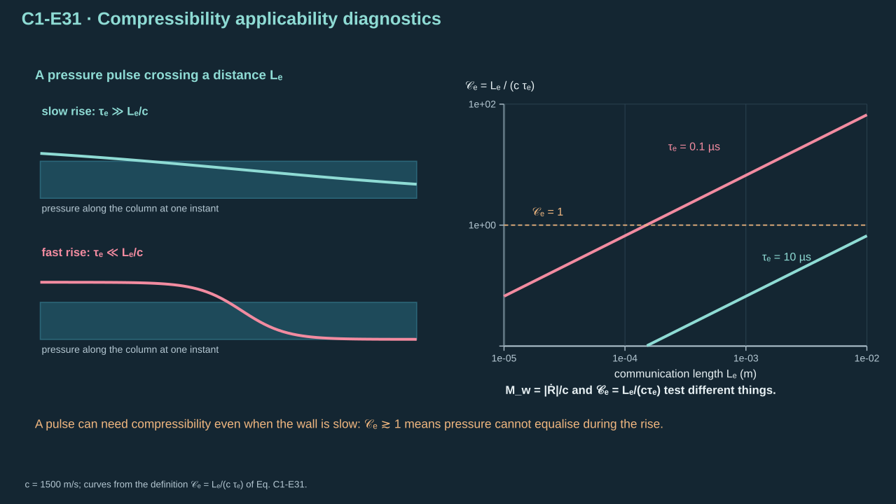
The source pressure moves carrier liquid; geometry determines whether that motion is a useful jet.
源压力使载液运动；几何决定这种运动能否成为有用射流。
Check and interpretation. Falsification question: does the measured or prescribed pressure history satisfy the stated momentum balance within its regime? An emitted jet further needs direction, finite moving mass and an evolving interface. Transfer success needs a receiver load and fracture evidence.
Identify PFC inventory, absorber, cavity and force path first. Absorption and phase change must supply the pressure history. Low boiling point leaves that history unresolved. The spherical balance gives acceleration of the surrounding carrier. Capillarity resists expansion and assists collapse. Viscosity dissipates energy in both directions. Keep the liquid inclusion distinct from the cavity.
An external jet needs directing geometry, coherent moving liquid and a receiver. Internal collapse jets, sealed inflation and stretched bridges have different event sequences. Track cavity shape, emitted liquid and film motion together. Chapter 2 supplies thermal closure. Chapters 3 and 4 address arrival, fracture and intact placement.
Distinguishes PFC liquid inventory, cavity contents and accelerated carrier, and states that the pressure history needs thermal/phase closure.
区分 PFC 液体库存、空腔内容物与被加速载液，并说明压力历程需要热与相变闭合。
Explains why a radial balance cannot select a jet direction; identifies a concrete asymmetric boundary or outlet.
解释径向平衡为何不能选定射流方向，并指出具体非对称边界或出口。
Distinguishes external ejection, re-entrant penetration, sealed inflation and liquid bridging using observable event order.
利用可观测事件顺序区分外部喷射、再入穿透、密闭膨胀与液桥。
Does not infer successful fracture or intact placement from cavity size or visible release alone.
不单凭空腔尺寸或可见释放推断成功断裂或完整落位。
Question 2 — Explain the Rayleigh coefficient and its speed singularity.
问题 2——解释瑞利系数及其速度奇异性的物理范围。
Explain the mechanism, assumptions, and limits in your own words.
用自己的话解释机制、假设与限制。
Reference answer and mastery criteria参考答案与掌握标准
Step 1.8.2 — Reconstruct the collapse benchmark and its limits
步骤 1.8.2——重建塌缩基准及其限制
Purpose in this chapter. Combine the trajectory, collapse-time coefficient, and energy check from Section 1.5. Explain their shared assumptions before discussing the ideal speed singularity.
Derivation. Reproduce the collapse chain rather than memorize its coefficient. Use squared speed and the integrating factor from C1.5-E13. Apply the initial condition as in C1.5-E14. Integrate reciprocal inward speed as in C1.5-E15–C1.5-E16. Obtain energy independently from pressure work in C1.5-E17. Check the chosen Mach cutoff using C1.5-E19 before interpreting the singular trajectory.
B is the dimensionless beta function defined in Eq
B 为式（C1.5-E17）定义的无量纲贝塔函数
Kl is carrier kinetic energy (J)
Kl 为载液动能（J）
π is the circle constant (dimensionless)
π 为圆周率（无量纲）
y — squared wall speed (m² s⁻²)
y — 壁面速度平方（m² s⁻²）
x — normalized radius, R/Rmax (1)
x — 无量纲半径，R/Rmax（1）
Vb — cavity volume, 4πR3/3 (m³)
Vb — 空腔体积，4πR3/3（m³）
Vmax — maximum volume, 4πRmax3/3 (m³)
Vmax — 最大体积，4πRmax3/3（m³）
V — dummy volume variable (m³)
V — 积分哑体积变量（m³）
Conventions and conditions. (C1.5-E17); The initial cavity is at rest, with no gas, viscosity, capillarity or compressibility.
约定与条件。 初始空腔静止，并忽略非凝结气体、黏性、毛细及可压缩性。
The singular velocity belongs to an ideal radial trajectory, not a validated physical maximum.
奇异速度属于理想径向轨迹，而非经过验证的实际最大值。
Check and interpretation. Falsification question: do gas pressure, capillarity, viscosity, compressibility or deformation cease to be negligible before the radius of interest? Finite pressure work remains compatible with unbounded ideal speed because the effective radial inertia vanishes. Physical maximum: Not established.
The coefficient integrates the common dimensionless collapse trajectory. Squared speed gives a first-order radial equation. Its integrating factor is radius cubed. Zero initial speed fixes the constant; the negative root selects collapse. Integrating reciprocal speed yields the beta function and 0.9146813565. Quadrupling pressure halves time under the same assumptions.
The 30 μm control gives 2.744 μs and 11.31 nJ. Half-radius inward speed is 21.60 m s⁻¹. These are spherical pressure–inertia results. PFC activation and emitted jet speed remain unestablished. Finite work coexists with divergent speed because inertia scales with radius cubed. Gas, vapor pressure, compressibility, transport and distortion can arrest that ideal trajectory. A finite-mass maximum needs geometry and observation scales.
Connects the coefficient to the nondimensional radius integral, including the initial condition and collapse branch.
把系数联系到无量纲半径积分，并说明初始条件与塌缩分支。
Explains the pressure and radius scaling and gives a consistent numerical or proportionality example.
解释压差与半径的尺度关系，并给出一致的数值或比例例子。
Reconciles finite pressure work with the shrinking inertia scale, then identifies concrete neglected arrest mechanisms.
用不断缩小的惯性尺度解释有限压力功，再指出具体被忽略的终止机制。
Distinguishes radial wall velocity from a directional jet and refuses a universal maximum without defined geometry, mass and observation scale.
区分径向壁面速度与定向射流，且在几何、质量和观测尺度未定义时不声称通用最大值。
Question 3 — Which spatial and temporal inputs determine a transfer jet?
问题 3——哪些空间及时间输入决定转印射流？
Explain the mechanism, assumptions, and limits in your own words.
用自己的话解释机制、假设与限制。
Reference answer and mastery criteria参考答案与掌握标准
Step 1.8.3 — Connect pressure history, geometry, and response time
步骤 1.8.3——贯通压力历程、几何与响应时间
Purpose in this chapter. Combine Sections 1.6 and 1.7. Distinguish the exact momentum integral, its reduced column benchmark, and the additional spatial and acoustic inputs needed for a transfer-jet prediction.
Derivation. Start with the exact time-integrated momentum in C1.6-E21. Apply C1.6-E22 conditions before discarding residual integrals. Use C1.6-E23 endpoint data to solve the spatial impulse field. C1.7-E30 separately tests communication using rise time. These steps determine an initial velocity increment; subsequent jet shape requires the moving-interface solve.
Ucolumn is the ideal straight-column speed increment (m s⁻¹)
Ucolumn 为理想直液柱速度增量（m s⁻¹）
Π0 is driven-end impulse (Pa s)
Π0 为受驱动端冲量（Pa s）
L is column length (m)
L 为液柱长度（m）
ta is crossing time (s)
ta 为传播时间（s）
c is sound speed (m s⁻¹)
c 为声速（m s⁻¹）
u — liquid velocity (m s⁻¹)
u — 液体速度（m s⁻¹）
ν — kinematic viscosity (m² s⁻¹)
ν — 运动黏度（m² s⁻¹）
U — characteristic speed (m s⁻¹)
U — 特征速度（m s⁻¹）
τ — event duration, t1−t0 (s)
τ — 事件时长，t1−t0（s）
z — column coordinate, 0≤z≤L (m)
z — 液柱坐标，0≤z≤L（m）
Δuz — axial speed increment (m s⁻¹)
Δuz — 轴向速度增量（m s⁻¹）
∇ — spatial gradient operator (m⁻¹)
∇ — 空间梯度算子（m⁻¹）
∇2 — spatial Laplacian operator (m⁻²)
∇2 — 空间拉普拉斯算子（m⁻²）
∇⋅ — spatial divergence operator (m⁻¹)
∇⋅ — 空间散度算子（m⁻¹）
Conventions and conditions.∇,∇2 denote spatial gradient and Laplacian; The reduced momentum formula needs a frozen geometry and small omitted impulses; ≪ denotes an asymptotic smallness condition.
The impulse benchmark gives an early velocity field, followed by a moving-interface problem.
冲量基准给出早期速度场，之后还需解运动界面问题。
Check and interpretation. Falsification question: does the observer stay liquid, and are geometry motion, residual impulses and acoustic rise effects small? Report location, duration, geometry and reference pressure with every impulse. Equal scalar peaks cannot determine the spatial gradient.
Specify driven boundary, outlet, meniscus and receiver geometry. Integrate pressure over time at every location. Equal peaks can have different durations and impulses. Equal scalar impulses can produce different spatial gradients. The gradient sets early velocity. Boundary conditions determine that gradient. A uniform impulse addition causes no acceleration.
The column gives 0.30 Pa s and 3.0 m s⁻¹. Its separate crossing time is 0.0667 μs. The total duration spans 7.5 acoustic crossings. Its ideal rectangular fronts have zero rise time. Communication at those fronts requires an acoustic model. A finite physical rise time needs the separate C1.7-E30 test. Uniform pressure remains unestablished. Check displacement, convection and viscosity. Then evolve the interface with pressure, stress and contact-line conditions. Focusing follows from that spatial evolution and thermodynamic pressure history. Rapid changes or impact can require compressibility at low bulk speed.
液柱给出 0.30 Pa s 与 3.0 m s⁻¹，传播时间另为 0.0667 μs。总时长包含 7.5 次声穿越。理想矩形波前上升时间为零，波前通信需要声学模型。实际有限上升时间需单独应用 C1.7-E30 检验。均匀压力仍未确立。先检查位移、对流及黏性，再结合压力、应力和接触线条件演化界面。聚焦取决于空间演化及热力学压力历程。快速变化或撞击时，即使总体速率低也可能需要可压缩性。
Review criteria
审阅标准
Distinguishes pressure (Pa), pressure impulse (Pa s), momentum (N s) and crossing time (s), without equating their units.
区分压力（Pa）、压力冲量（Pa s）、动量（N s）与传播时间（s），不混淆其单位。
Uses the spatial impulse gradient and actual boundary conditions to explain the initial velocity; a scalar peak is insufficient.
利用空间冲量梯度与实际边界条件解释初始速度，说明单一峰值不足。
Explains what the ideal column predicts and what its small-displacement and residual-impulse diagnostics do not guarantee.
解释理想液柱预测的内容，以及小位移与残余冲量诊断不能保证的内容。
Identifies the subsequent moving-interface, pressure, phase-transfer and compressibility information needed for a physical jet.
指出实际射流还需要后续运动界面、压力、相变传质与可压缩性信息。
Submit your three answers
提交三个回答
Answer in your own words, in either language. Paste your answers into the teaching chat. Review covers reasoning, assumptions, and limits. All three accepted answers establish chapter mastery.